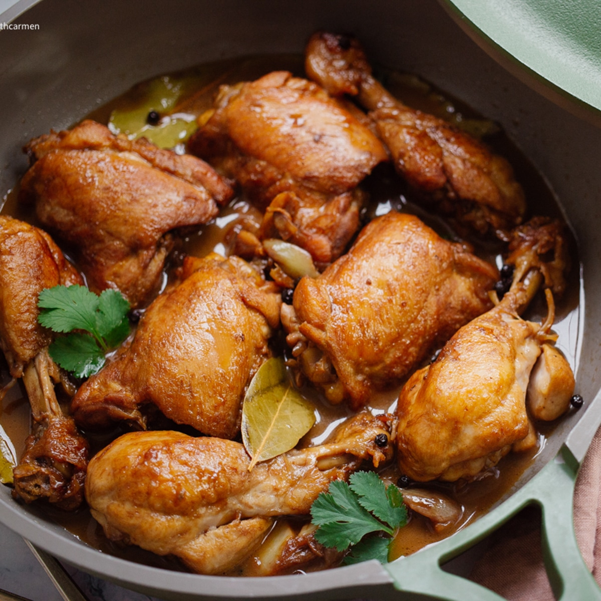

Chicken Adobo

Description:
Chicken Adobo is a Filipino dish where chicken pieces are marinated in Soy sauce and spices.
The adobo could be pan fried and stewed until tender.
Ingredients:
- 1/4 cup cooking oil of choice
- 6 cloves garlic, crushed
- 1 pc onion, sliced
- 1 kilogram chicken cut ups
- 2 tbsp vinegar
- 1/4 cup soy sauce
- 1 cup water
- 2 pcs bay leaves
- 1 tsp whole black peppercorns, slightly crushed
- 1 pc chicken broth cubes
- 1 tsp brown sugar
Steps in Cooking Chicken Adobo
- Heat oil in a pan and sauté garlic and onions.
- Add Chicken to the pan and sear on all sides, until the chicken has browning in its skin.
- Pour in soy sauce, vinegar, and water.
- Add bay leaves, pepper, chicken cubes, sugar.
-
Bring to a boil over high heat then reduce heat to simmer but do not cover the pan.
-
Remove the chicken pieces from the sauce and fry in another pan until browned.
- Slowly add the sauce to the browned chicken.
- Let the excess sauce simmmer for 10 minutes or until sauce is thickened.
- Serve Warm
Back to Main Menu